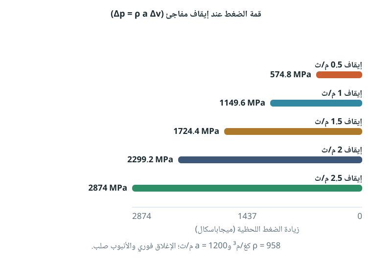

المطرقة المائية: كيف يُغلق صمام واحد أنبوبًا بقوة انفجار؟
Water hammer: closing a valve can burst a pipe
إغلاق صمام بسرعة يحوّل طاقة حركة الماء إلى ضغط فوري. القاعدة تقول إن الزيادة تساوي كثافة الماء × سرعة الموجة × تغيّر السرعة؛ إيقاف 2.5 م/ث في أنبوب فولاذي يضيف نحو 2.9 ميجاباسكال لحظيًا.
الماء لا يقبل الانضغاط في حدود العمل العادية، فحين يُمنع من الاستمرار في الحركة يتحوّل زخمه إلى ارتفاع ضغط عند الصمام. الموجة ترتدّ ذهابًا وإيابًا في الأنبوب، ويُسمع طرق متكرر هو أثرها في تثبيتات الأنابيب. الضغط لا ينشأ من المضخة بل من الإيقاف، ولهذا يظهر في الشبكات القديمة عند إغلاق صنبور سريع أو صمام كهربائي.
الآلية
كيف يحدث الأمر على مستوى الجسيمات أو المتغيّرات المباشرة
الصدمة تنتشر بسرعة الصوت في الماء المقيّد داخل الأنبوب، وهي أعلى من سرعة الصوت في الماء الحرّ لأن جدار الأنبوب يقيّد التمدد. عند الصمام تُبنى جبهة ضغط، وتنتقل نحو المصدر، وترتدّ عند أي تغيّر في المقطع أو عند خزان. زمن رحلة الموجة يحدّد هل تتشابك الموجات أم تتراكم: الإغلاق الأسرع من رحلة الموجة ينتج الصدمة الكاملة.
الأرقام والوحدات
العلاقات والوحدات والنطاقات العددية التي تسند الشرح
قاعدة جوكوفسكي: Δp = ρ·a·Δv. عند كثافة 958 كغ/م³ وسرعة موجة 1200 م/ث: إيقاف 0.5 م/ث يضيف 575 كيلوباسكال، و1 م/ث 1.15 ميجاباسكال، و2.5 م/ث 2.87 ميجاباسكال. الضغط الساكن في شبكة مبانٍ قد يكون 0.4 ميجاباسكال، فالإضافة تعني أن الضغط اللحظي صار سبعة أضعافه.
الفرق الدقيق
المفهوم الملتبس الذي يُخلَط به، وأين ينفصلان
هذا ليس ارتفاع الضغط الناتج عن مضخة ولا عن انسداد: الانسداد يرفع الضغط تدريجيًا ويستمر، أما المطرقة فقمّة قصيرة الكسر تحدث في أجزاء من الثانية، ولهذا لا يلتقطها مقياس ضغط عادي بقراءة بطيئة.
حدود التعريف
أين ينكسر التعريف أو النموذج وما الذي لا يفسّره
القاعدة تفترض إغلاقًا فوريًا وأنبوبًا صلبًا. الإغلاق التدريجي أبطأ من رحلة الموجة يخفض الزيادة إلى نسبة من القيمة الكاملة، والأنابيب البلاستيكية تخفض سرعة الموجة فتخفض القمة لكنها تسرّع التعب المادي. الحل الهندسي هو التخفيف: خزان هواء أو صمام تخفيف أو إغلاق بطيء.

| الكمية | القيمة | المصدر |
|---|---|---|
| زيادة الضغط عند إيقاف 1 م/ث | 1149.60 MPa | [1] |
| زيادة الضغط عند إيقاف 2.5 م/ث | 2874.00 MPa | [1] |
| كثافة الماء عند 100 مئوية | 958 kg/m³ | [2] |
| سرعة موجة الضغط في أنبوب فولاذي | 1200 m/s | [3] |
المصادر
- 1 OpenStax, College Physics 2e — Bernoulli's Equation — OpenStax. openstax.org/books/college-physics-2e/pages/12-2-bernoullis-equation · اطُّلع عليه 2026-11-16
- 2 OpenStax, College Physics 2e — Heat — OpenStax. openstax.org/books/college-physics-2e/pages/14-1-heat · اطُّلع عليه 2026-11-16
- 3 OpenStax, College Physics 2e — General Applications of Bernoulli's Equation — OpenStax. openstax.org/books/college-physics-2e/pages/12-3-the-most-general-applications-of-bernoullis-equation · اطُّلع عليه 2026-11-16
راجعه: مراجعة آلية — ديوان المعرفة (أرقام محسوبة + مصادر متحققة) 2026-11-16 · 2026-11-16 · آخر تحديث 2026-11-16